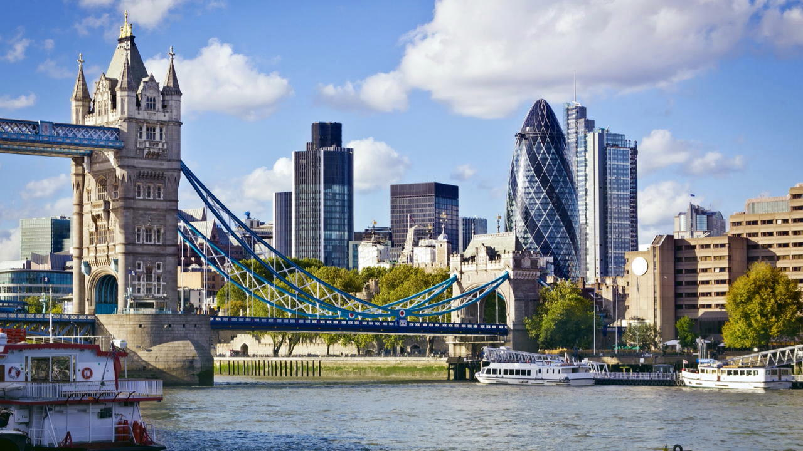
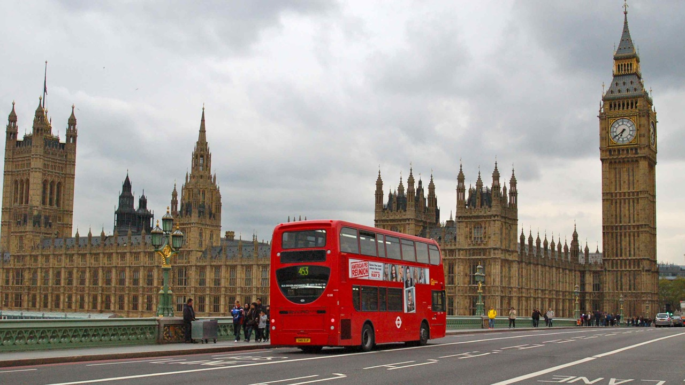
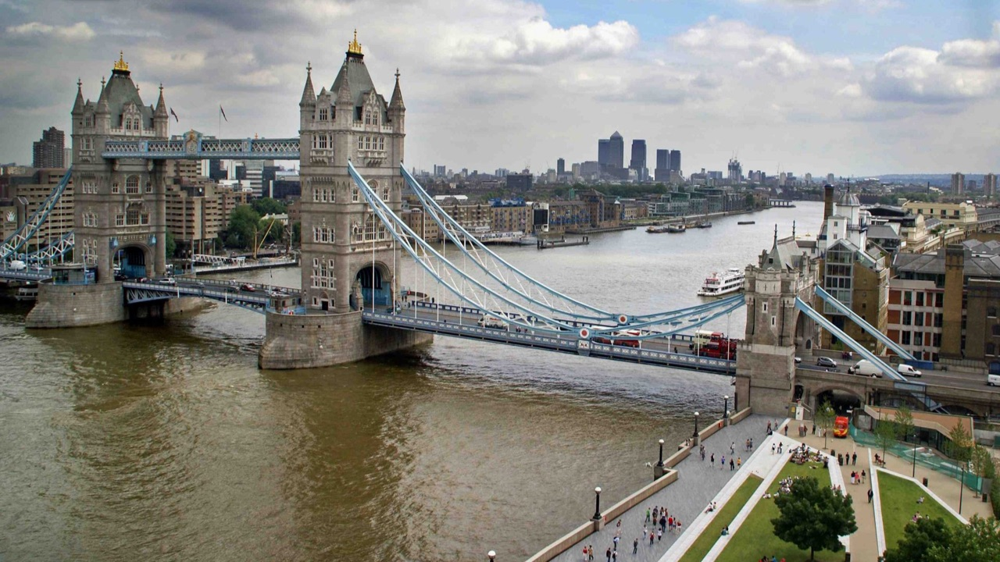
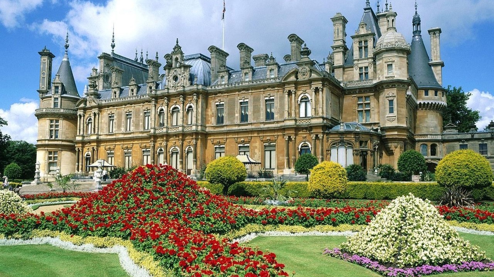

Детальніша інформація про місто
1. У світі є багато міст які мають таку ж назву, свій Лондон є на території Канади, в США, та інших країнах. Незвичним є факт, що канадський Лондон також розміщений на річці, яка називається Темза.
2. Як не дивно, дуже престижною професією тут є робота в таксі. Далеко не всі можуть скласти іспит і стати таксистом в Лондоні, оскільки всі лондонські таксисти зобов'язані ідеально знати мапу міста та розташування всіх без виключення вулиць. Це одна з причин того, що таксі у Лондоні найдорожче в світі.
3. Всупереч репутації як дощового місто, в Лондоні менше опадів ніж в Римі, Неаполі чи навіть австралійському Сіднеї, проте якщо тут починається дощ, то він затягується на декілька днів.
4. Одним із символів Лондона є найбільш впізнаваний автобус у світі — двоповерховий Роутмастер (англ. Routemaster — Володар доріг).
5. Будинок Парламенту в Лондоні або Вестмінстерський палац налічує більш як сто кімнат, а всі коридори разом узяті, протяжністю понад п'ять кілометрів.
6.Під Лондоном тече двадцять схованих в труби річок.
7.Всі лондонські автобуси стали червоними в 1907 році. До цього їх фарбували в різні кольори.
8.Аеропорт Хітроу в Лондоні приймає і відправляє міжнародних рейсів більше, ніж будь-який інший аеропорт світу.
9.У Лондоні відкрився найперший у світі зоопарк. Сталася ця подія в далекому 1828 році.
Лондон залюбки прийме кожного, хто знайде час аби завітати в гості. Це місто контрастів, місто, яке поєднало у собі велич та простоту, щирість та витонченість, серйозність та елегантність.